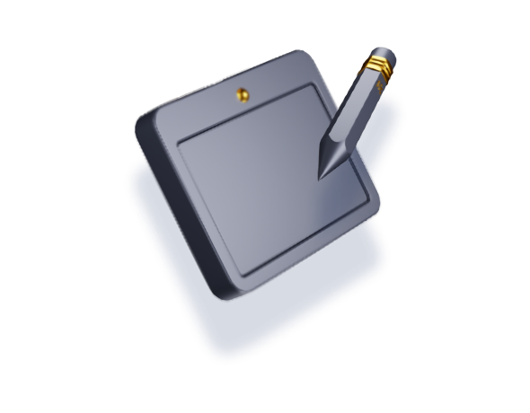

진단평가 신청 완료
진단평가 신청 완료!
대치상어수학 진단평가 신청이 완료되었습니다.
평가자의 학생 계정으로 로그인하여 진단평가를 진행해주세요.
-
태블릿과 전자펜 준비
깔끔하게 전체 풀이과정을 쓰면서 풀어야 정확한 진단을 할 수 있어요.
-
와이파이 신호 확인
와이파이 신호가 약할 경우에는 원활한 진단 서비스가 어려울 수 있어요.
진단평가 응시 전 확인사항
-
-
메뉴의 진단평가 > 진단평가 신청에서 [신청하기] 버튼을 통해 상세 정보 입력, 결제 후 신청 가능합니다.
-
메뉴의 모의고사 > 강의실에서 [평가 결과 확인] 버튼을 통해 다운로드 할 수 있습니다.
-
1. 메뉴의 진단평가 > 시험장에서 [평가 결과 확인] 버튼을 클릭합니다.
2. 진단평가 리포트의 [평가 결과 확인] 버튼을 클릭합니다.
3. 해당 항목의 리포트 상세 정보를 확인합니다.
-
-
* 서비스 이용 기한 만료 시에는 환불이 불가능하오니, 해당 서비스 이용 기한을 확인하시길 바랍니다. (취소 및 환불 규정 바로가기)